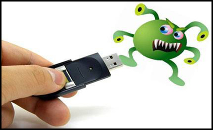

OBJETO VIRTUAL DE INFORMACION [OVI] - FORMATO WEB
Curso: Diseño de Sitios Web (301122) - UNAD
>
BIENVENIDOS A UNA DE LAS LECTURAS MAS IMPORTANTES, EN ESTE CASO SERA LA NUMERO 3, DESPUES DE VER CIERTOS ARGUMENTOS REFERENTES A LA SEGURIDAD INFORMATICA, EN ESTA LECTURA APRENDERA, CONOCERA Y ENTENDERA, CUALES SON LAS AMANEZAS Y QUE TIPOS HAY, A LAS CUALES ESTAMOS ESPUESTOS AL IGUAL QUE NUESTRA INFORMACION.
AMENAZA INFORMÁTICAS Y SUS TIPOS
•Una amenaza informática es un riesgo alto al que estas expuestas las empresas del mundo al correr daños y pérdidas irrecuperables en sus datos que es lo más valioso que tienen al no contar con los equipos adecuados están expuestas a ser estafadas, dañadas y vulnerables a cualquier tipo de ataque informático. (casasbuena, 2015)
TIPOS DE AMENAZAS
Básicamente, podemos agrupar las amenazas a la información en cuatro grandes categorías: Factores Humanos (accidentales, errores); Fallas en los sistemas de procesamiento de información; Desastres naturales y; Actos maliciosos o malintencionados; algunas de estas amenazas son:

• Virus informáticos o código malicioso
• Uso no autorizado de Sistemas Informáticos
• Robo de Información
• Fraudes basados en el uso de computadores
• Suplantación de identidad
• Denegación de Servicios (DoS)
• Ataques de Fuerza Bruta
• Alteración de la Información
• Divulgación de Información
• Desastres Naturales
• Espionaje
Para lograr protegernos con la mayor seguridad posible de estas amenazas, el primer paso que debemos tomar es conocer cuáles son las más comunes, para así activar una defensa eficaz ante ellas. La exposición al riesgo comienza en nuestra casa, discurre en las tareas cotidianas de nuestra vida y se expande al entorno laboral.
Las amenazas por el medio utilizado se clasifican con respecto al modus operandi del atacante:
• Spyware (Programas espías): Código malicioso cuyo principal objetivo es recoger información sobre las actividades de un usuario en un computador (tendencias de navegación), para permitir el despliegue sin autorización en ventanas emergentes de propaganda de mercadeo, o para robar información personal (p.ej. números de tarjetas de crédito). Hay iniciativas de utilizarlos para controlar el uso de software pirata.
Según algunas estadísticas, cerca del 91% de los computadores tienen spyware instalado, y de acuerdo a un reporte de la firma EarthLink”, en una revisión de cerca de 1 millón de computadores en Internet, el promedio de programas “spyware” en cada uno era de 28.
• Troyanos, virus y gusanos: Son programas de código malicioso, que de diferentes maneras se alojan en los computadores con el propósito de permitir el acceso no autorizado a un atacante, o permitir el control de forma remota de los sistemas. El virus, adicionalmente, tiene como objetivo principal ser destructivo, dañando la información de la máquina, o generando el consumo de recursos de manera incontrolada para bloquear o negar servicios.
• Phishing: Es un ataque del tipo ingeniería social, cuyo objetivo principal es obtener de manera fraudulenta datos confidenciales de un usuario, especialmente financieros, aprovechando la confianza que éste tiene en los servicios tecnológicos, el desconocimiento de la forma en que operan y la oferta de servicios en algunos casos con pobres medidas de seguridad.
Actualmente, los ataques de phishing son bastante sofisticados, utilizando mensajes de correo electrónico y falsos sitios Web, que suplantan perfectamente a los sitios originales.
• Spam: Recibo de mensajes no solicitados, principalmente por correo electrónico, cuyo propósito es difundir grandes cantidades de mensajes comerciales o propagandísticos. Se han presentado casos en los que los envíos se hacen a sistemas de telefonía celular – mensajes de texto, o a sistemas de faxes.
Para el año 2006, se tenía calculado que entre el 60 y el 70% de los correos electrónicos eran “spam”, con contenidos comerciales o de material pornográfico.
•Ingeniería social: Utilizan técnicas de persuasión que aprovechan la buena voluntad y falta de precaución de la víctima para obtener información sensible o confidencial.
• APT o Amenazas Persistentes Avanzadas: son ataques coordinados dirigidos contra una empresa u organización, que tratan de robar o filtrar información sin ser identificados. Se suelen ayudar de técnicas de ingeniería social y son difíciles de detectar.
• Ataque DoS: también llamado de denegación de servicio, es un ataque a un sistema de computadoras o red, que causa que un servicio o recurso sea inaccesible a los usuarios legítimos.
• Suplantación de identidad: La más conocidas son la suplantación de IP, de ARP, de DNS, suplantación web, de correo electrónico e incluso de redes sociales.
Según el Computer Security Institute (CSI) de San Francisco, aproximadamente entre el 60 y 80 por ciento de los incidentes de red son causados desde dentro de la misma, es decir, por
usuarios o personal técnico. Las calificadas como amenazas internas pueden ser incluso más dañinas que las realizadas desde el exterior, ya que los sistemas de prevención de intrusos o IPS, y firewalls son mecanismos no efectivos en este tipo de amenazas por no estar orientados al tráfico interno. Por el carácter de las amenazas internas éstas se podrían catalogar en dos tipos: maliciosas o simples descuidos.
Por otra parte, las amenazas externas son aquellas que se originan fuera de la red local, por personas ajenas y por vulnerabilidades que permitan acceder a ésta: rosetas, switches o hubs accesibles, redes inalámbricas desprotegidas, equipos sin vigilancia, etc. Estas amenazas son más difíciles de llevar a cabo, ya que es necesario un trabajo de recopilación de información para detectar las vulnerabilidades y un conocimiento para buscar la manera de como atacar el sistema y evitar los métodos de seguridad implementados por el administrador de la red. (Jose Silva, 2018) ↑SUBIR↑